Rotary Club Nasik
GRAPECITY
2017-18
GRAPEVINE

Presidents Address
Good evening, welcome to the installation ceremony of the incoming board for the year 2017-18. Today marks a change in the annual cycle, and I want to begin my speech by thanking our out-going president, Rtn Asif Shaikh. Congratulations on an outstanding Rotary year Asif! You and your team have accomplished a great deal and have made the name of our club shine brighter in District 3030. Thank you.
This year is the 101st year of the Rotary Foundation, and for me, my 10th year as a Rotarian. My Rotary journey started in 2008. As a new member I was showered with affection and encouragement, I felt “I belong here”, and this motivated me to take initiative. Through Rotary I have met many people who have gone on to become friends, inspirations, and pillars of support. Being a Rotarian has also given me the chance to serve our community. For this, and for all the people I have met through Rotary, I am truly grateful.
As a Rotarian I have seen what a committed club can do. And this knowledge makes it is a moment of great privilege, pleasure, and honour for me to be installed as President of our club. I accept this opportunity with humility. Ours is a vibrant club, and my aim as president will be to build on the strengths we have, and to create new strengths and positivity as we progress through the year.
“Whatever Rotary may mean to us, to the world it will be known by the results it achieves.” These words by Paul Harris have had a profound impact on me. They remind me that service to society is the founding ideal of Rotary. The incoming board and I envision that this year we will all come together to make a difference in the lives of young children, and we hope that in the future when we look back at this year, that is what Rotary Club of Nasik, Grapecity will be known for.
This year we will take the simplest of actions, actions which when repeated regularly and with love and care will have magnified results.
- Rotary International Focus Area - Wash In Schools - WINS will be our focus this year. With each member of our club getting involved, we propose to reach 100 schools in and around Nasik, thus ensuring hygiene and prevention of disease.
- For the year 2017-18, we will also adopt a school and monitor 1000 students, with a focus on Anemia and adolescent health.
- This Rotary year we will continue to step up our outreach and attract new members to our club. We will focus on mentoring our new members and supporting flexibility to allow Rotarians – young, working, and retired - to make the most of their time, talents, energy, and passion to serve humanity as only Rotarians can.
As Mother Teresa so beautifully said:-
“I can do things you cannot. You can do things I cannot. Together we can do great things. So friends let us join hands and do great things.
Thank you
Rtn. Alka Singh
|
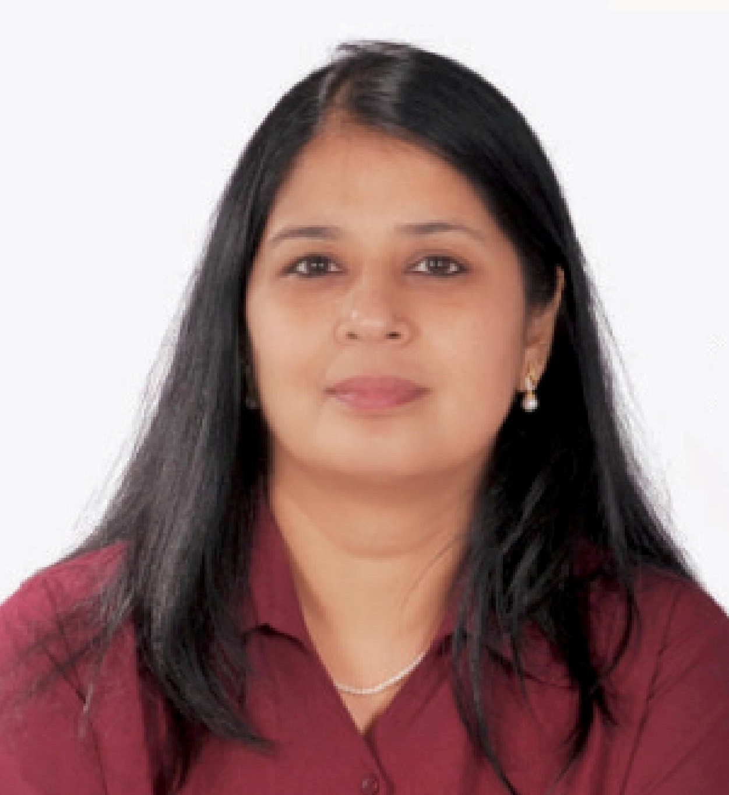
President Rtn. Alka Singh |
|
|
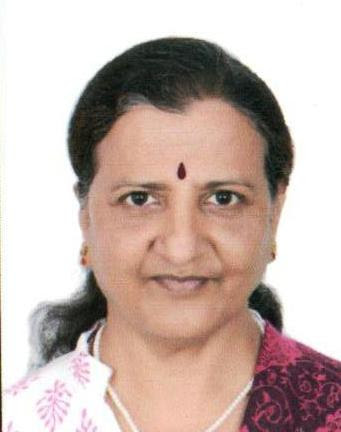
Vice President Rtn. Durga Sali |
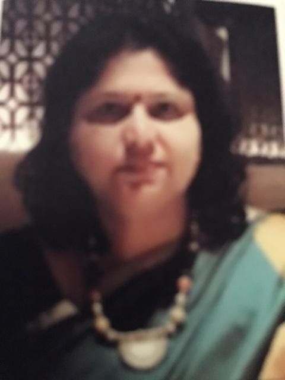
Secretary Rtn. Jyotika Pai |
|
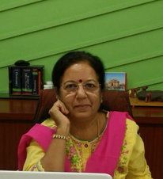
Jt Secretary Rtn. Kavita Dagaonkar |
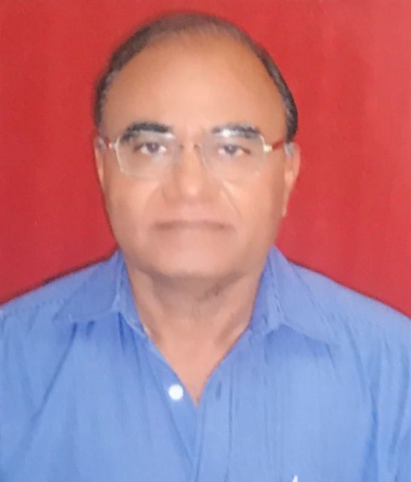
Treasurer Rtn. Harish Sonavane |
|
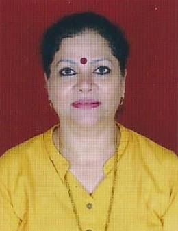
Foundation PP Rtn. Asha Venugopal |
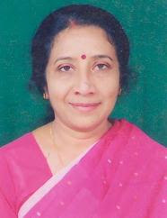
Membership Rtn. Radha Pallai |

IPP Rtn. Asif Shaikh |
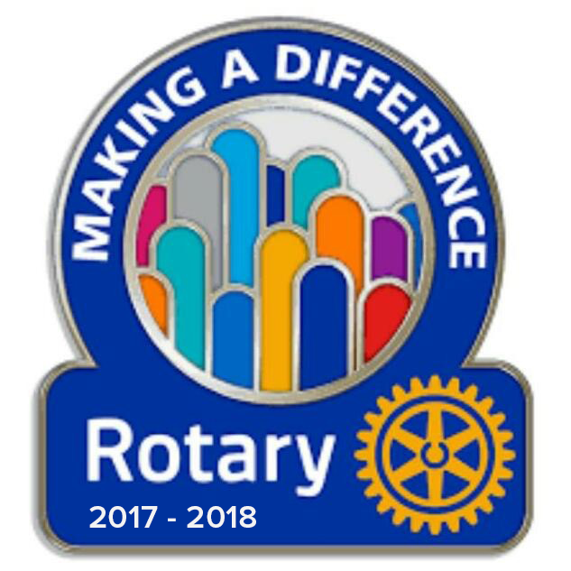
New Generation Rtn. Achamma Aloor |
|
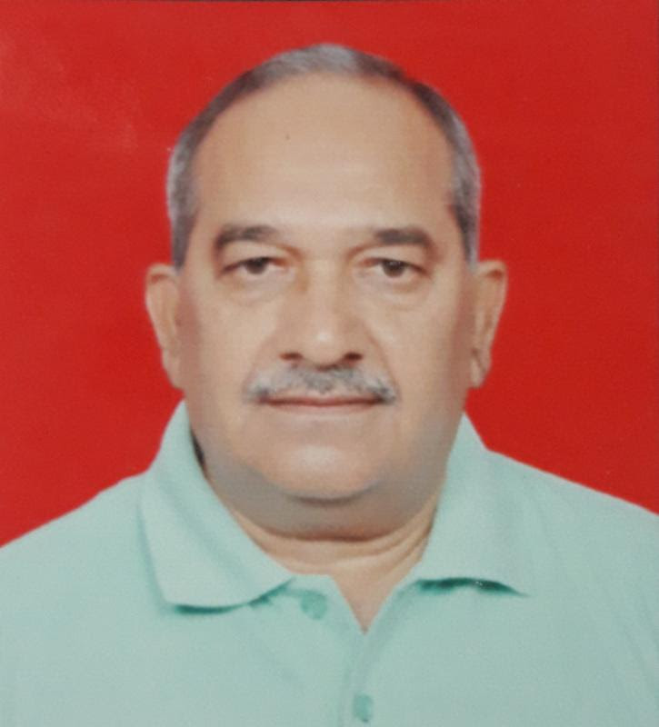
Medical Rtn. Anil Deshmukh |
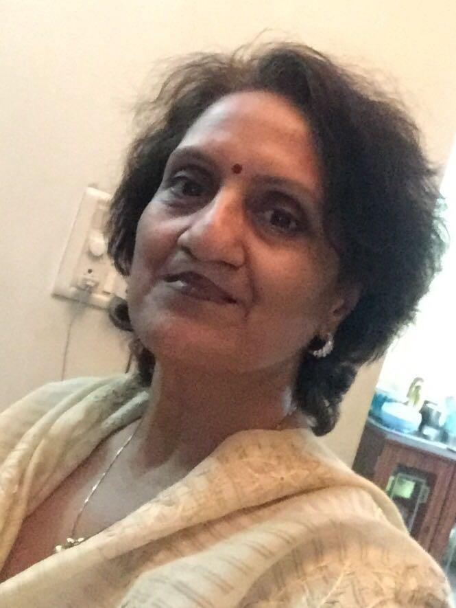
Non Medical Rtn. Meenakshi Mittal |
|
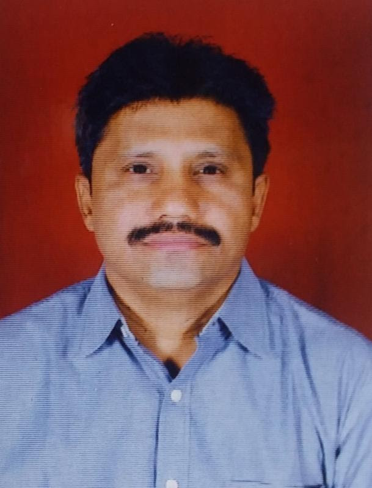
Public Relations Rtn. Jayant Khairnar |
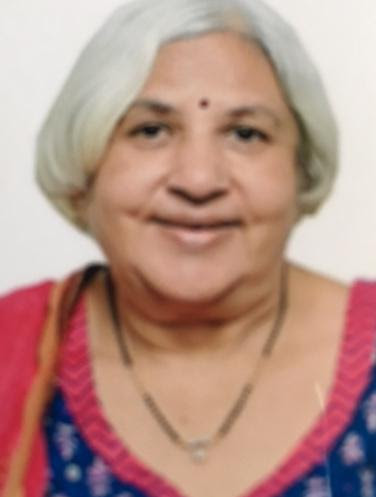
Fellowships Rtn. Mala Kapadia |
|
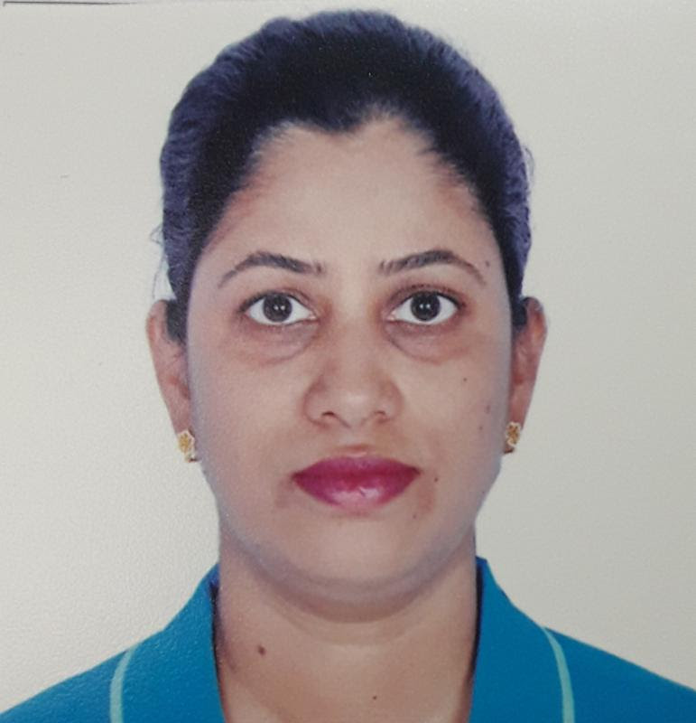
Sgt at Arms Rtn. Vibha Ghavare |

Sgt at Arms and Editor Rtn. Uday Patankar |
Secretary Report 2016 - 2017
Dear Friends,
With this, I present you my report for the year 2016-17.
The year started with the bang, with the well attended installation ceremony which was unique in itself as all the 16 rotary clubs, President & secretaries were invited personally for the installation which was held at Nasik club on 14th July.
President Rtn. Asif Shaikh took over the charge from the outgoing president Rtn. Asha Venugopal & outlined his plans & visions for the Club.
As I start with the different avenues,
Membership Development and Retention:
It is only right for me to start with membership. What is impossible individually becomes reality when likeminded, kind hearted people come together for a common cause. We have to do more & continue doing more & more. We started with 39 members. On installation day we inducted 3 new members, Aishwariya Ganore, Anjali Aditya & Col. Atre. We were happy to welcome Rtn. Chokani back with open arms. The Ground work for inducting 2 new members has been completed & they will be formally inducted during the installation. They are Ms. Sandhya Jain & Mr. Oke. The strength of the club will be 45.
Thanks to the efforts of membership director Rtn Anjali Mehta & her team.
Club Administration:
Vice president Rtn. Vivek Saykhedkar did an excellent job by getting some excellent speakers from varied fields. They spoke on diverse topics from finance, insurance, GST, health & nutrition, Education, social issues, personality development, Environmental issues, Spirituality, alternate healing therapies, Membership Development and retention & many more. The effort was to invite speakers as per the designated months.
Fellowships at the weekly meetings & felicitations during the Birthdays & anniversaries went off smoothly.
Each Family night was held at different venue with delicious menus and fun filled games. The team efforts ensured an average attendance of 75%.
The first family night was held on 25th Oct 2016 at Quality Inn. The games conducted were Tambola & finding your partner, everyone had a wonderful time.
2nd family night was held on 31st Jan 2017 at Hotel Surya, which was a well attended affair.
3rd family night was organized on 24th march 2017at Xion banquet of hotel Emerald Park. The food was divine and a lot of fellowship took place because of the ambience.
DG Mahesh Mokalkar’s official club visit too, was well planned and went as per schedule, with a breakfast meeting at hotel Emerald Park. He personally met each member of our club & we all Rotarians were impressed with his motivational speech.
Keeping up with all new ideas the 15th charter night too was celebrated on 24th May in a unique way. This evening was the result of President. Rtn Asif Shaikh & his team. A beautiful cake was cut by all the Past Presidents; it was well attended & well enjoyed night.
The Club Participated in following events :
- The Dist. Conference at Nagpur was well attended by 20 Rotarians & Anns of RCN Grape city.
- This year too our club participated in interclub cricket tournament organized by RC of Nasik airport at Fravashi International School. Though we didn’t win I would like to appreciate the efforts and enthusiasm of our young Rotarians who put up a good show. Thank you.
- The District seminar held in Nasik on 7th August 2016 at Nasik Engineering cluster was attended by Rtn Naresh Shah , Rtn Rajan, AG. Asha Venugopal, Rtn Rajni Gatkal , Rtn Anjali Mehta, Rtn Asif Shaikh & myself. Our club was awarded prize for maximum participation of members during event.
- On 4th July 2016, DG Mahesh Mokalkar Installation ceremony at Wardha was attended by AG Asha Venugopal & myself.
NEW GENERATION:
On 24th July2016 in the memory of our beloved Rtn. Jose Aloor the installation ceremony of the Interact club took place at Kilbil School A.G Asha Venugopal presented pins and manuals to the president and secretary of the Interact Club. Board members presented pins and manuals to other office bearers; the club charter was handed over to the principal by Rtn president Asif.
The Interactors participated in a Interact District conference on 26th feb held at Fravashi International School. Which was an I opener for them.
They also enjoyed an interactive session conducted by our Rotaractor Shreya on 25th Jan 2017 at Kilbil School.
On 23rd march 2017 we added another feather in our cap, by installing a second interact club at Savitri Bai Phule Vidalaya
A lecture on first Aid training was organized for the students of Kilbil School On 8th feb by Rtn Dilpal Rana being an interactive session it was highly appreciated by the students.
I would like to thank new Gen. Director Padmini,AG Asha,Rtn Uma Dutta,Rtn Achama,Rtn vibha ,Rtn Uday,Rtn Alka ,Rtn Naresh,&Rtn Anne Nazima for their service towards ,making the young Generation better equipped to face any crisis in their lives.
COMMUNITY SERVICE I (medical):
Director Medical Rtn Kavita Dagoankar did a wonderful job and organized many projects which I would like to list:
- A General health check-up of 1800+ children of St.Joseph School was done from 4th July to 8th July.
- Dental camp (detection and treatment) at Navrachna Vidalaya was held on 30th July 2016.
- In the month of March 2017 Cancer detection camp Commenced under the flagship of RCN Grape city. This camp was inaugurated at the hands of PDG Dada Deshmukh and well initiated by Rtn Asha at Zenith Metaplast followed by Rtn Kavita & Rtn Alka’s factories. Where 500+ workers (both men & women) were checked for Cancer and referred to Manavta curie hospital for further follow ups.
- Donation to Thelasemia patient Total Rs. 62,000.00 contributed by our Club Rotarians.
COMMUNITY SERVICE II(non medical):
Likewise Director Non Medical Rtn Radha Pillai too strived hard and achieved great results.
- Under her Directorship we won best project of the year award, Where we felicitated 75 teachers by awarding ROTARY NATION BUILDER AWARD to each of them on occasion of teachers day at a glittering ceremony organized at Pancham hall of Hotel Green view.
- Week long projects were carried out on the occasion of children’s day at various schools with the donation of Rs. 90,000 received from Master Ronav and Master Arav, residing in USA, children from Rtn Mittal family.
- Distribution of shoes and socks to 187 children in the Zilla Parishad School khurd, bhawani, Igatpuri taluka, nashik
- Visited Padsad school for the hearing impaired children at Cidco. Adoption of a child for one Academic year. Distributed gifts and mid day meals with ice cream to 108 children.
- Donated 50 nos of LED tubes to Adarsh Vidyalaya,Nashik road this school is run by Samta Samaj Vikas Sanstha.
- Lunch Distribution to 150 inmates of Nav Rachana Girls Hostel. The club felicitated the Gupta Family Children by giving them certificates for their donation.
- Micro Credit program was continued for three different groups of needy women’s.
- PROJECT FOR CLEAN DRINKING WATER FOR CHILDREN.
- A water filter obtained under the global grant. Programme was installed in the Urdu School,Ozar
- A water filter was donated to Adarsh Vidyalaya,nashik road.
- A tree plantation programme was undertaken along with the Maharashtra forest dept. At Sapte village under the banner Giri Parv @Sapte 32,000. Saplings were planted & our club provided Tea,breakfast & Lunch for Volunteers courtesy our club.
- Tree plantation programme was organized in the campus of North star academy on 10th july at the foot hills of Pandavlene. Members planted more than 35 saplings the programme ended with fanfare, fellowship and refreshments.
- Distribution of School Bags & Hygiene kits was organized for children of Navrachna Orphanage on 30th July 2016. AG Asha Venugopal address to the children about cleanliness and hygiene in daily life.
- Vocational visits by office bearers….
- Visited Dikshi School,Ozar for discussion on planning of Happy School programme.
- Visited Gram Panchayat Karyalaya, Thandamutha gaon, Rajewadi, for Adoption of the village.
- Members visited Chaitanya Ashram, sewing classes to look scheme.
- Visited Jansikshan sanstha, cidco.
- Visited Sharda School, Rane Nager proposal for library.
- Visited Vishampayan Vidyalaya proposal for library.
- Visited the mentally challenged orphanage for children at Makhmalabad distributed biscuits.
- E-Learning kit was donated to Matruseva sangh school, through our club, required amount was donated by PDG I.G. Shah.
TREASURER:
Treasurer Rtn Naresh Shah presented updated statements of accounts regularly. The club’s finances & accounts were maintained in a very professional manner.
Thank You Rtn Naresh.
Public Relation:
Thanks to Rtn. S. Rajan for giving full coverage in local news papers covering news regarding all projects, regularly. I would like to Thank You first and foremost Rtn Asif & AG. Asha who gave me the opportunity to serve this club and to do my little bit for the community and for having faith in my capabilities and for supporting me at all times.
- A special thanks to all the Past Presidents for their valuable guidance and who have made the club what it is today.
- Thanks to P.P Rtn Naresh for your valuable support towards the club.
- The Management and staff of Hotel Emerald park for their space and service.
- All the philanthropists from within the club and without. we would not have been able to execute so many projects if it was not for their generosity, kindness and above all their social commitment towards the community.
- Finally we would like to extend our sincere apologies if we as a team have unknowingly hurt anyone’s sentiments.
Thank you once again……………..
100% ATTENDANCE YEAR 2016-17
- Rtn. Alka Singh
- Rtn. Anil Deshmukh
- PP Rtn. Anjali Mehta
- Rtn. Arvind Panchal
- PP Rtn. Asha Venugopal
- Rtn. Asif Sheikh
- PP Rtn. Dr. Babulal Agrawal
- Rtn. Dr. Bhagwan Bhangdia
- Rtn. Dilpal Rana
- Rtn. Durga Sali
- Rtn. G.M. Jadhav
- Rtn. Jayant Khairnar
- Rtn. Jyotika Pai
- Rtn. Kavita Dagaonkar
- Rtn. Mala Kapadia
- PP Rtn. Naresh Shah
- Rtn. Padmini Sujathan
- Rtn. Radha Pillai
- Rtn. Satyanarayan Chokhani
- Rtn. Uday Patankar
- Rtn. Vivek Saykhedkar
- Rtn. Vebha Ghavare
Seed Project Report
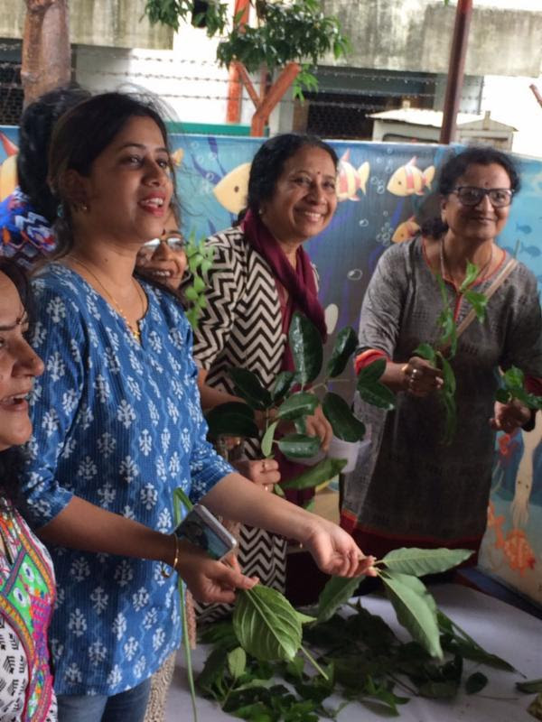The new rotary year started with a bang.1st july being world plantation day,president Alka singh organised a seed bank project at North Star academy from 10 am onwards.For this project she had prepared the manure well in advance with the help of Rtn Khairnars and had asked all members to collect seeds of all the fruits they ate at home.We made balls of these seeds with the manure.These balls were to be dried and later planted in their gardens or those who dod not have one were asked to scatter it in open places on the highway.These seeda would germinate and there would be lot of trees blossoming on either side of the road.
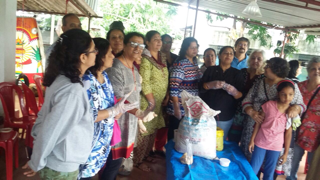This project was well attended by many Rotarians with spouses n grand kids too.A game was organised by Rtn Radha Pillai wherein participants had to identify leaves on display.Rtn Padmini won the game.There was lot of bonhomie with heavy downpour adding to the fun.Hot chai Pakoras and jilebis were also served.
Vote of thanks was given by Sec Rtn Jyotika Pai.
THIS WAS ROTARY CLUB GRAPECITY 'S UNIQUE WAY OF CREATING A MOVEMENT FOR PLANTING TREES AND CREATING A GREENER PLANET!!
Blood Donation Drive
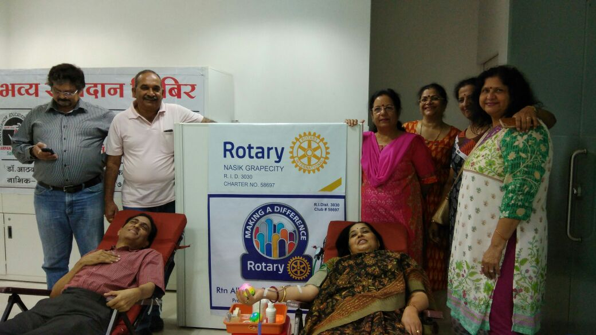Paying heed to our DG Dr K S Rajan’s call for organising a blood donation camp in 1st week of July, Rotary Club Of Nasik Grapecity organised a camp for blood donation at Zenith Metaplast Satpur under the guidance of Rtn. Ash Venugopal and President Alka Singh. Camp was well attended by Rotarians and Anns. RTn Uday Patankar was the 1st Rotarian to donate blood. Rotarians who attended were Asha Venugopal, Alka Singh, Jyotika Pai, Anil Deshmukh, Durga Sali, Uday Patankar, Vivek Saykhedkar, Kavita Dagaonkar, Aishwarya Ganore, Vebha Ghavare and all. Rotary ann’s who attended were Udai Singh, Jalaprabha Deshmukh, Dinesh Mehta, Sachin Ganore.
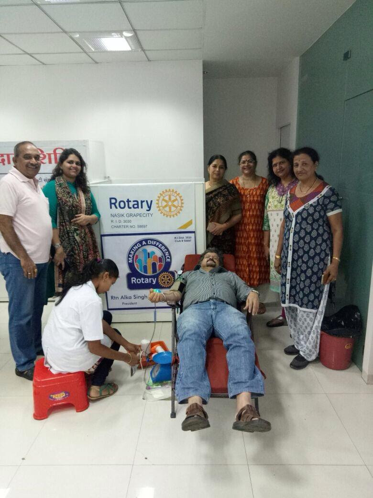 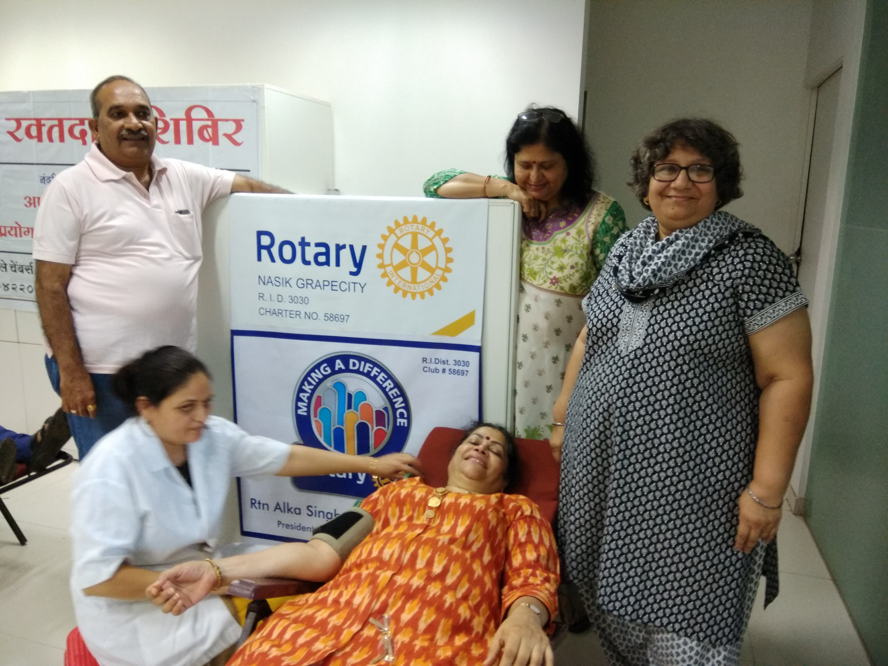A total number 51 bottles of blood was collected. A wonderful way to begin our new year. Abig thanks to Asha Venugopal and her whole staff for making this happen.
God Bless!
DG Dr. Rajan

Dear Fellow Trendsetter, Rotary Greetings!! First Lady Dr. Bhagyalakshmi joins me in congratulating you, as you will be taking charge as Club President for the Rotary Year 2017-18. Thank you for taking the project Blood Donation wholeheartedly on the first day of our Rotary year 2017-18. Friends, come 1st July there is signal of arrival of a new Rotary year. And with that there is a change in the team of leaders across the world. This happens year after year. A new team will take over the mantle of District 3030 with renewed energy, vigor and commitment.
The methods may change, but our mission remains the same, that of SERVICE. What is impossible individually becomes reality when like-minded, kind hearted people come together for a common cause on a platform like Rotary. We have to do more and more good things to the World. The community needs us and we need to send the message that we care and we are always there'. Rotarians and their families have been involved for years in SERVING HUMANITY. I am very confident that you all must have done good homework and planned to achieve the set goals. In a club small deeds done are better than great deeds planned. It will motivate the members to participate in rotary activities in club level and the club will be a vibrant club.
A club leader is one who knows the way, goes the way, and shows the way to his members. Every President is a fulcrum to his club, around whom all the activities occur. If the fulcrum is strong the club functions effectively. And an effective club becomes a VIBRANT CLUB. And for the district to become Vibrant every club must be empower to become vibrant.
The entire District Secretariat, Assistant Governors and Committee Chairs and team members are there to give you support and guidance. Please feel free to contact us at any time and we all will be happy to assist and guide. Remember we will be working together and closely to achieve our goals. As you all are aware that the July month is the beginning of New Rotary year and I propose that we all as a SMART TEAM 2017-18 will be together undertaking following projects for Smart beginning of 'Rotary – Making the change'. I suggest the following:
- 1. To strengthen the club by involvement and participations of all the members.
- 2. Appoint learned seniors Rotarian as trainer for regular orientations of members
- 3. Initiate to start new active RCC, Rotaract Club and Interact Club
- 4. Invite new prospective members to Join Rotary and subsequent orientation.
- 5. Let us all pledge to work for betterment of Farmers in our respective areas by empowering them through various programs of government like we did in Polio
- 6. Save Earth - create your own jungle by planting trees all around your locality and also protect Environment through Plastic free awareness programs and also by Water and Energy conservation - mainly Solar
- 7. Donate Blood to save life.
- 8. Focus on service avenues of all the six RI Trust areas including Literacy - TEACH and WinS (Wash in Schools) which is now on priority.
- 9. Up-Load your goals and update your activities on Rotary Club Central to become eligible for Presidential Citation .
- 10. Lead by example by contributing your Share to The Rotary Foundation.
Every effort will be made in the District by strengthening and supporting clubs, focusing on increase in humanitarian service and enhance public image. Recently we had celebrated Centennial year of The Rotary Foundation. The Rotary Foundation has been doing good to the world improving lives of people since 1917. This demands new achievements in TRF program, support and participation.
We started in 1917 with the contribution of $ 26.50 since grown into a Foundation which holds $ 1 billion on programs and has spent over $ 3 billion on programs and made difference in lives throughout the world. We have to make every effort to support and strengthen our Foundation for betterment of our future generation.
Rotary year 2017-18 will be significant year as we are close to fulfilling our promise of a Polio free world. This year we will surely witness End of Polio from the world. We will work hand in hand with DRR Arti Gautam and Inner Wheel Chairperson Sangeeta Godgaonkar and will be partners in Service in various projects.
Bhagyam and I extend our best wishes to all the Rotarians of our District 3030. We shall win by believing in mantra of 'working together', and as I say, together we can and together we will make our journey memorable in 'Rotary - Making the Difference'.
SO LET US ENJOY EVERY SECOND OF OUR ROTARY WORK IN 2017-18 Yours Truly in Rotary Dr. K. S. Rajan District Governor 2017-18 RI District 3030
Message from RI Director
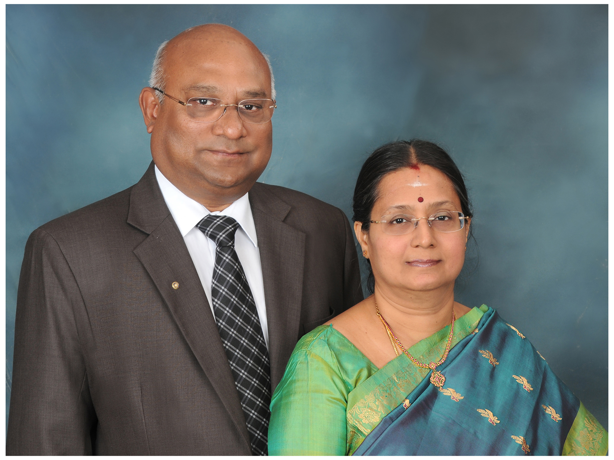
Greetings.
Greetings.
District Directory is a very important communication tool for every active Rotarian of the District. District Directory provides all the Rotary information and also specifies the Goals of the Rotary for the year 2017-18. I am sure District 3030 Directory will be user friendly to achieve the goals of Rotary during the year.
Our World leader and Rotary International President Ian H.S. Riseley’s concern on Environmental degradation and global climate change are serious threats to everyone. They are having a disproportionate impact on those who are most vulnerable, those to whom Rotary has the greatest responsibility.
To address many issues related to the community Rotary needs leaders who will help Rotary connect with, represent, and better serve all of the members of our communities. Let us keep that spirit of teamwork and cooperation always in our mind to take forward Rotary: Making a difference.
Mala joins me in wishing you and Mrs. Dr. Bhagyalakshmi a very purposeful and successful Rotary year 2017-18.
With kind regards,
C. Basker Director 2017-19
RIP Ian H. Riseley
9 February 2017
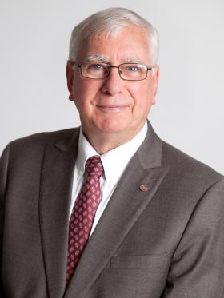Dear fellow Rotarians,
Ask any Rotarian what led them to Rotary, and you’ll usually get different answers. Why? Because joining Rotary is a personal journey. For me, it all began as a way to expand my business. My accounting practice was new and I was looking to network, so I joined a local Rotary club. Soon, I was making more than just business contacts, I was making friends and, most importantly, I was making a difference in my community and beyond.
No matter the path that took you to Rotary, we all have one thing in common: the belief in putting Service Above Self. It is because of this commitment to serving others that we are able to confront some of the world’s greatest humanitarian challenges. But we all know that our work isn’t finished yet. It can’t be, as long as polio still affects any children anywhere, as long as water is still scarce for some, and as long as education is still treated as a privilege rather than a right. After 110+ years, our work is just getting started.
I hope you will continue your journey with us, as we continue to serve our communities so that future generations can thrive through Rotary: Making A Difference.
Sincerely,
Ian H.S. Riseley
President, Rotary International 2017-18